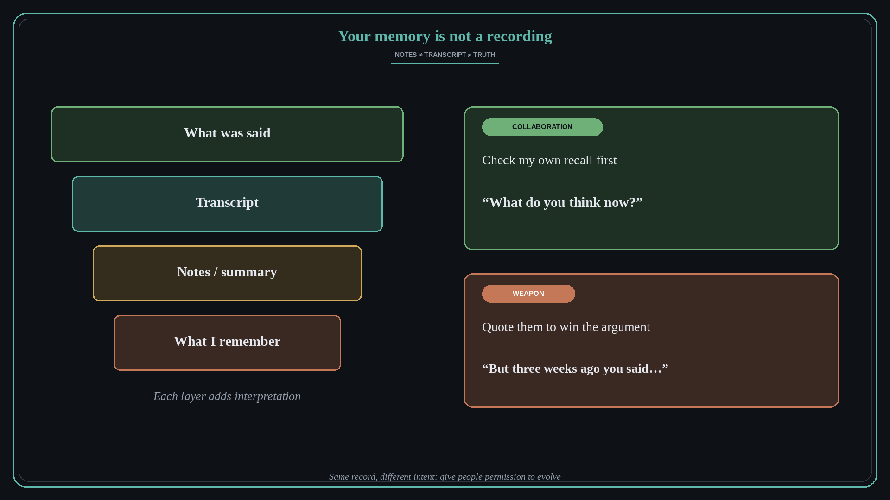

Your memory is not a recording, so give people permission to evolve
Source: Teresa Torres (@ttorres) and Petra Wille, “Recorded Conversations” podcast episode
original post
What it claims
In a podcast episode, Petra Wille and Teresa Torres look at what happens to working relationships when almost every meeting is recorded by an AI note-taker. Teresa found that checking her own transcripts showed she had been misremembering conversations, and even getting frustrated with people over things they never said. Petra describes a colleague pulling up a transcript to correct her memory of her own past opinion. Their takeaways: your memory is not a recording; use transcripts on yourself first; give people permission to evolve, because what someone thinks now matters more than what they said three weeks ago; the same record can be a collaboration tool or a weapon, depending on intent; and notes, transcripts, and truth are different layers, so verify before you build a conversation on them.
Why it matters for a PO
POs carry a lot of “but you said…” memory about stakeholder commitments, and recorded meetings make it tempting to win arguments with a quote. Using the record to check your own assumptions keeps trust high, while using it to pin someone to an old position drains it. Treating changed minds as new information keeps stakeholders willing to think out loud with you.
3 takeaways
- Before you get frustrated with someone, check whether they actually said what you remember.
- Use transcripts to find your own blind spots, not to catch others out.
- Ask “what do you think now?” instead of holding people to an old statement.
Practice this week
This week, pick one meeting you remember strongly and read its notes or transcript. Write down one thing you remembered differently. Next time a stakeholder seems to contradict an earlier position, ask what changed in their thinking before you quote the record.